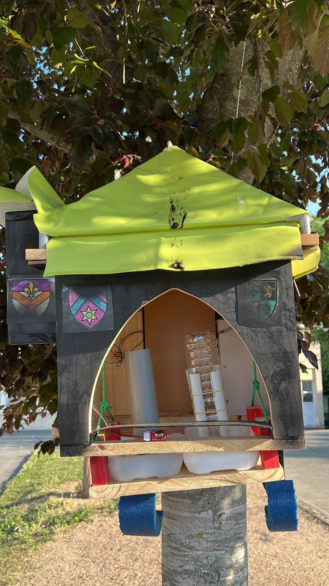
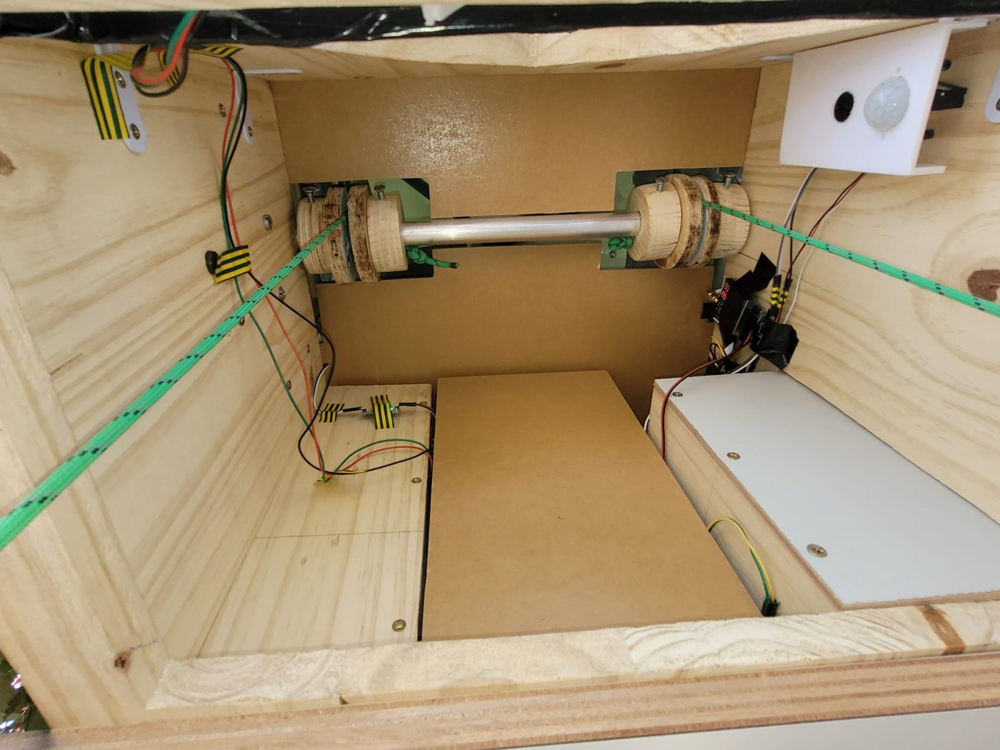
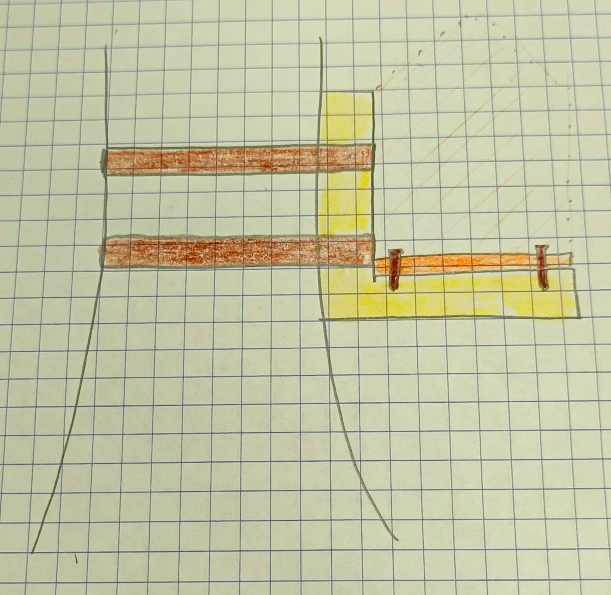
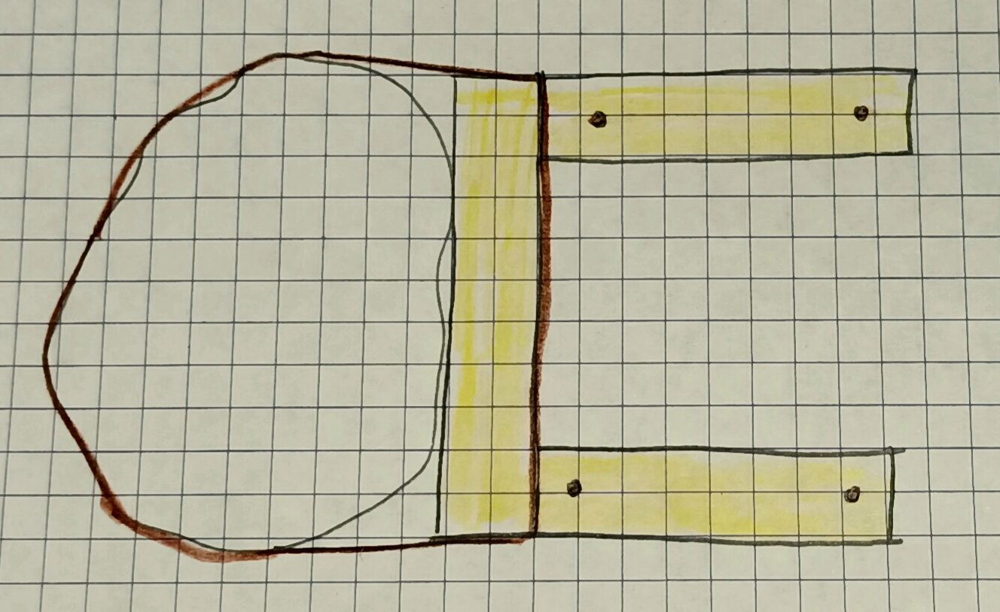
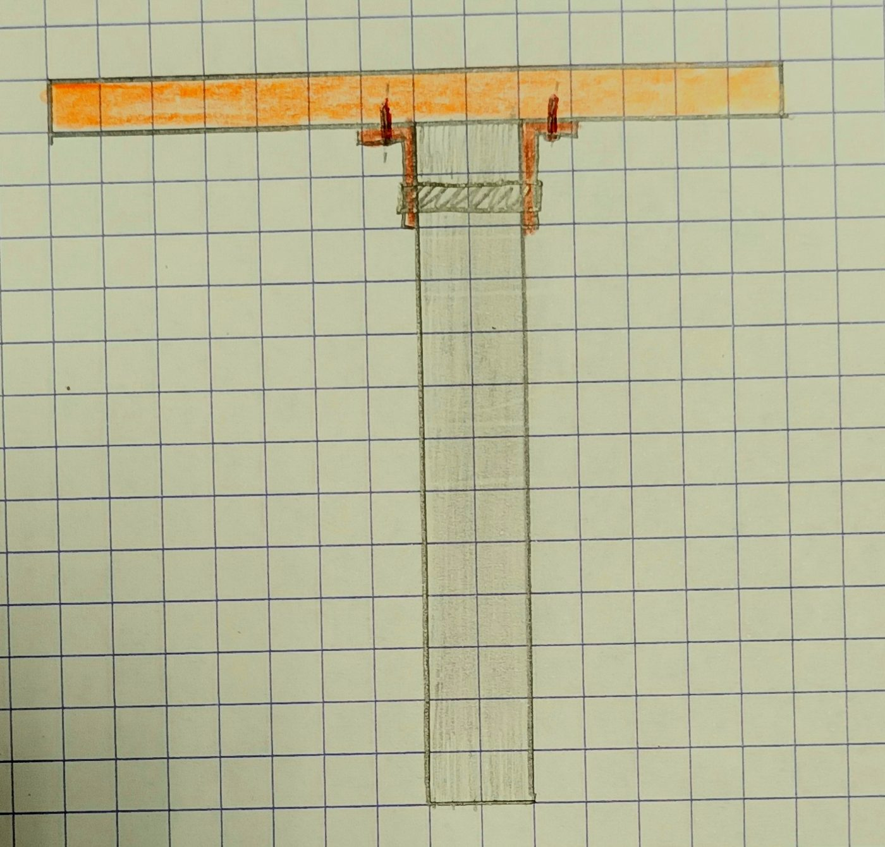
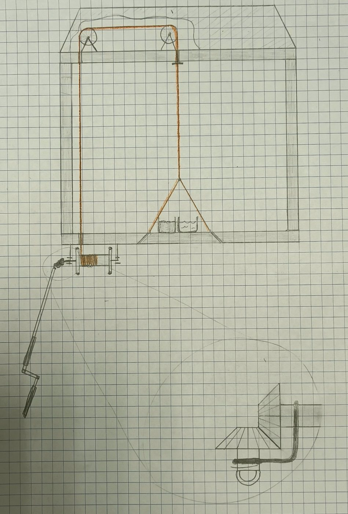
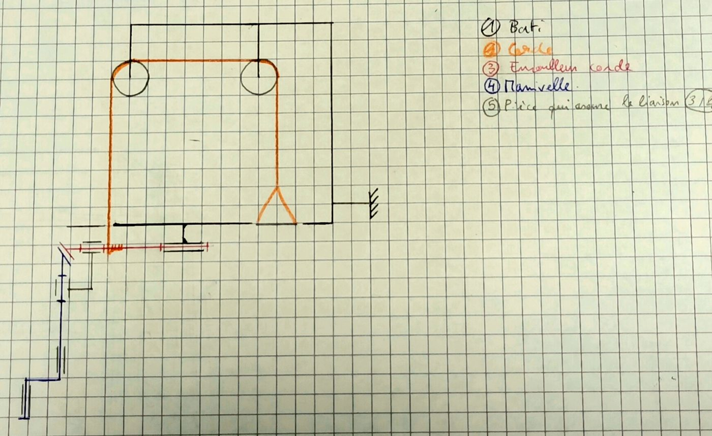
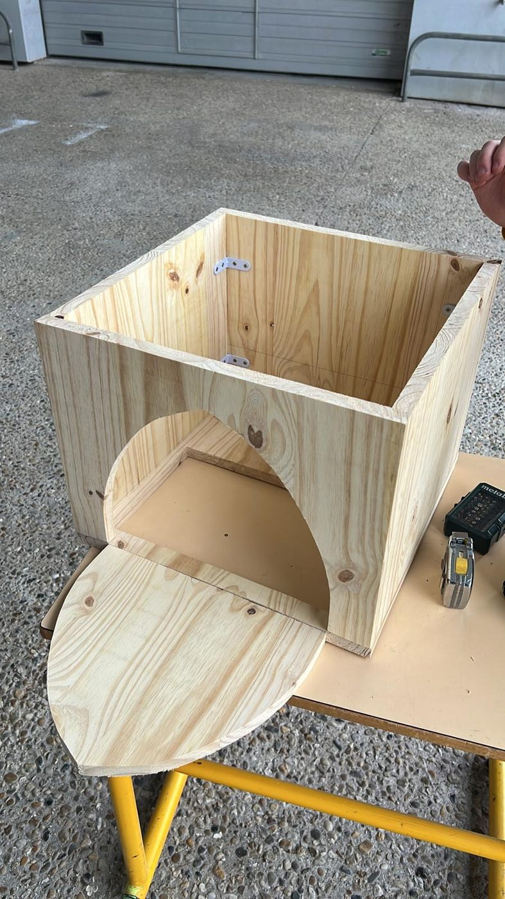
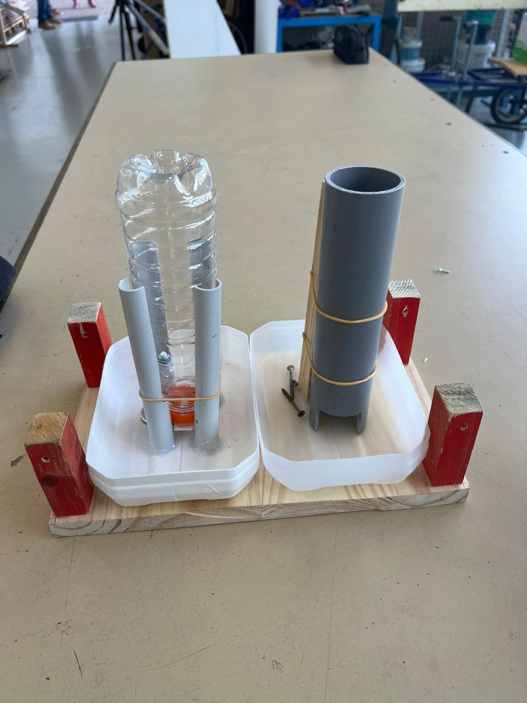
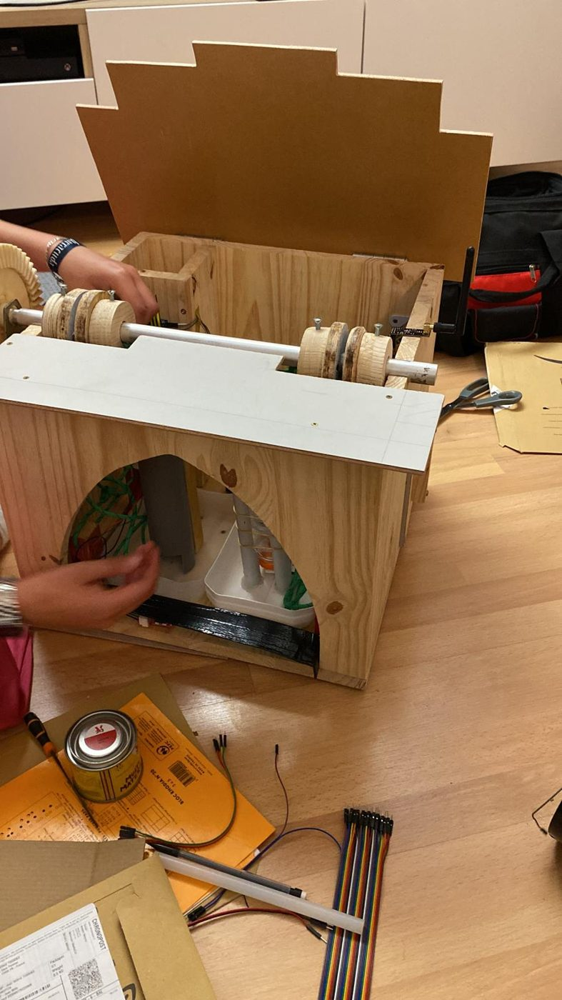

01Contexte
Concevoir et fabriquer une mangeoire connectée pour observer la faune autour de l'école. Elle devait accueillir des capteurs (poids, mouvement, son, température…) et une transmission radio, tout en restant facile à remplir en eau et en nourriture.


02Mon rôle
Nous étions environ 25, répartis en pôles. J'étais dans le pôle mécanique. J'ai cherché et dessiné les solutions de fixation de la mangeoire, puis conçu le système de descente de la plateforme.
03Fixer la mangeoire
J'ai étudié trois façons d'installer la mangeoire : suspendue à une branche, posée sur un poteau ou fixée au tronc. Chaque piste a fait l'objet d'un croquis pour la comparer avec l'équipe.



04Descendre l'eau et la nourriture
Problème : une mangeoire en hauteur est difficile à recharger. J'ai proposé une plateforme suspendue à une corde, qui passe sur deux poulies et s'enroule sur un tambour. Une manivelle amovible, reliée par un renvoi d'angle, fait monter ou descendre la plateforme : on ne l'accroche que pour recharger, donc personne ne peut manipuler la plateforme sans elle. La longueur de corde est calculée pour que la plateforme arrive à hauteur d'enfant en position basse.


05De l'idée à la mangeoire
Le caisson est en pin, avec une entrée en ogive pour les oiseaux. Une fois réalisé, le système de descente comprend un arbre en aluminium et des tambours en bois, qui enroulent deux cordes portant la plateforme. Celle-ci accueille un distributeur d'eau à bouteille renversée et un tube à graines.



Côté embarqué, l'équipe a choisi d'utiliser la jauge de poids comme capteur de garde. Elle seule reste active et réveille les autres capteurs quand un oiseau se pose. La consommation passe ainsi d'environ 820 mA à 51,5 mA, ce qui permet de tenir les 7 jours d'autonomie demandés.
06Ce que j'en retiens
- Passer d'un besoin d'usage (recharger facilement, sans laisser la plateforme accessible à tous) à une solution mécanique simple, dessinée puis fabriquée.
- Comparer plusieurs pistes sur croquis avant de choisir, et les traduire en schéma cinématique.
- Intégrer la mécanique avec la partie embarquée dans un même caisson.